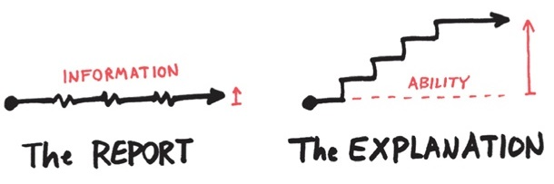
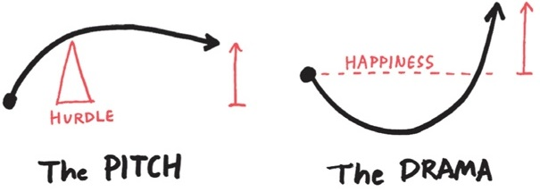
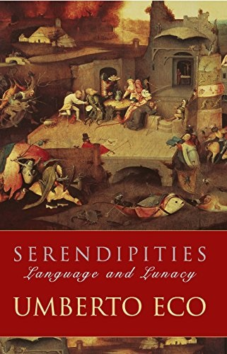
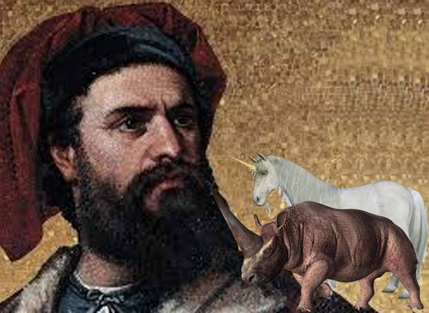

Reading History Forwards
Here I just want to provide a little cautionary aspect on any attempt to recount history. It's important that we shed our present knowledge and immerse ourselves in the uncertainties of the past.
In the context of gaming, when a game is conceived, its creators are navigating uncharted territory, unaware of the impact their creation might have on the gaming landscape. This perspective of an uncertain future prompts us to appreciate the risks taken by pioneers in game development, who, armed with creativity and ambition, ventured into the unknown.
Telling the Story
Scholars and historians have been drilling test wells in what they thought was the bedrock of gaming history for quite some time now. This is often done via the process of "telling the story" of that history.
When you consider story-telling, you become aware that whether we're writing them, telling them, living them, or using them as a pedagogical way to see and understand the world, a story always has a moment when the plot thickens. In other words, something significant happens. Looking at those moments is crucial.
But what counts as "significant"? Clearly we can frame parts of a story as significant just based on how we emphasize those parts. We can highlight moments that drive the narrative forward, reveal essential information, or impact the people involved in a meaningful way.
This notion of "significant moments" is similar to recognizing the pivotal points in other areas of study, whether it's a turning point in physics, a groundbreaking discovery in archaeology, or a key event in history. Each of these moments holds importance and alters the trajectory of the overarching narrative.
However, a challenge here is that the significance is something we recognize in hindsight. From the future we have a privileged position of knowing how things turned out and this necessarily provides us with a certain parallax in terms of significant moments.
A Cautionary Note
So this brings us to our first cautionary bit.
The act of "telling the story" of history, while essential, carries the inherent risk of distorting our perception of significant events. The narrative process, shaped by emphasis, framing, and hindsight, may inadvertently alter the weight and meaning of certain historical moments.
This distortion arises from the storyteller's subjective choices, potentially obscuring the true complexity and nuances of pivotal events in the unfolding tapestry of history. So we need to use this as a reminder that historical narratives, though invaluable, should be approached with a critical awareness of the storyteller's influence on the portrayal of significance.
Dan Roam in his book Show and Tell has some interesting visuals that I think resonate quite well with this idea, even though his book is focused specifically on presentations. There are four primary modes that resonate with me in terms of how we present history by "telling its story." The first two of these are the report and the explanation.
The idea here is that a pure reporting mode provides basic information. Essentially this is where you deliver the verifiable facts. The explanation, however, is meant to change the audience's broader knowledge. The second two of the modes are called the pitch and the drama.
Here the analogy stretches a little bit but the idea of "the pitch" for me is where you shift from facts and explanation and start to guide the audience towards your particular interpretation of the history you're recounting. Here's where you engage your the mind of your audience. The drama part is where you engage their heart.
What I'll call the "distortion of significance" can come in when we focus on the drama part to the exclusion of the others, which is usually done in the interests of telling what we believe to be the most interesting story. My viewpoint is that what we need are the interplay of all three elements: reporting (to get the basic facts), explanation (to put the facts in context), the pitch (to present our own viewpoint) and the drama (to contextualize our viewpoint in relation to the contextual facts).
Starting with reporting ensures a foundation of factual accuracy, providing the essential bedrock of historical information. Explanation adds depth by placing these facts into a broader context, fostering a richer understanding of the circumstances surrounding key moments. The pitch introduces a subjective viewpoint, offering a personalized interpretation of events. Finally, the drama injects emotion and context, helping to illuminate the significance of the viewpoint within the broader historical landscape.
The Background Books of History
Let's consider the 1998 book Serendipities: Language and Lunacy by Umberto Eco.
Eco recounts how the thirteenth-century Italian explorer Marco Polo searched for unicorns with a certain tenacity and, not only that, claimed to have found them. A claim to have found unicorns would definitely seem to be a significant event in this historical context.
The wider context here is that as Polo was exploring the islands of Sumatra, he specifically mentioned "numerous unicorns" that were "very nearly as big" as "wild elephants." Polo seems to have been a little surprised at the nature of these creatures. In Book 3 of his Travels, Polo said:
Tis a passing ugly beast to look upon, and is not in the least like that which our stories tell of as being caught in the lap of a virgin. ... In fact, tis altogether different from what we fancied.
Polo elaborated on this in telling us some specific characteristics.
[The animal had] hair like that of a buffalo, feet like those of an elephant, and a horn in the middle of the forehead, which is black and very thick. ... The head resembles that of a wild boar, and they carry it ever bent towards the ground. They delight much to abide in mire and mud.
Going with the above idea of modes of storytelling, what you just got was the report.
Crucial context here is that during Marco Polo's time, the existence of unicorns was widely accepted in European culture — but they most certainly were not described in anything like Polo's description. And with the mode of storytelling, what I just gave you was a bit of the explanation.
So we know, from Polo's own writing, that he perceived the mismatch between expectation and reality. And ssuming we're going with the idea that Marco Polo didn't actually discover unicorns, what did he discover?
One possibility that historians latch onto is that Polo was referring to rhinoceroses, which were known to inhabit the regions he visited. The Javan rhinoceros, in particular, has a single horn.
So there's the pitch: an attempt to allow you to accept a possible interpretation of events. But let's play that interpretation out a bit.
It probably helps to keep in mind rhinoceroses were known to both European and Asian cultures at the time. The animal had been described by Greek and Roman writers and was depicted on ancient coins. In medieval Europe, rhinoceroses were sometimes depicted in artwork and reports of their existence were commonly circulated by travelers and merchants.
I bring all that up because it leads to the question: how could Marco Polo possibly have confused this animal for a unicorn?
Well, one thing is apparent: Marco Polo had never heard of rhinoceroses. But unicorns were something he had heard of. Therefore, an animal that moved about on four legs with a horn on its nose had to be a unicorn, even if it clearly didn't match any sort of description he had ever heard.
How do we account for all this? Well, here's where we get a bit into the "drama" part, where the goal is to win your heart and your mind.
Accrording to Eco, Marco Polo fell victim to what Eco refers to as "background books." In the chapter "From Marco Polo to Leibnitz", Eco provides a context for these "books" which are conceptual in nature and refer to our presuppositions about the world. Of background books, Eco says:
We travel and expore the world, carrying with us some 'background books.' These need not accompany us physically; the point is that we travel with preconceived notions of the world, derived from our cultural tradition. In a very curious sense we travel knowing in advance what we are on the verge of discovering, because past reading has told us what we are supposed to discover.